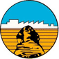
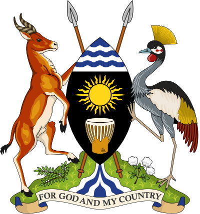

Arab Contractors
Uganda Limited
Uganda Limited

Ministry of Works
& Transport
& Transport
Edinburgh Napier
University
University
Monorail Transit System
Proposal
Kampala — Mukono Road Corridor, Uganda
A straddle-beam monorail solution based on the Cairo Monorail model to reduce road deterioration, ease traffic congestion, and provide reliable mass transit for East Africa's fastest-growing urban corridor.
Venture Kubariho
Transport Planning & Engineering Expert
Prepared For
Arab Contractors Uganda Limited
For submission to the Ministry of Works & Transport, Republic of Uganda